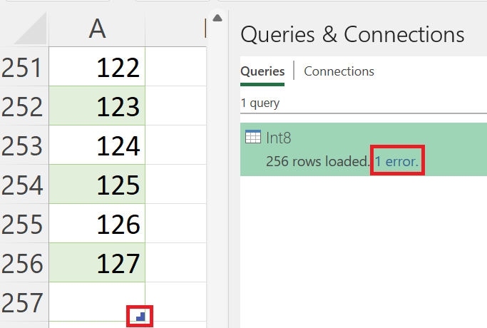

It's a LongType() to the top (If you want to rock and roll)
I’ll always be the first to admit that the things that interest me may be of little (technical) interest to you. However, I figure “Hey, why not just start documenting my random gibberish findings?!” and well, here we are with a short but sweet article on Dataflows Gen2 in Microsoft Fabric.
Backstory: I’ve always been curious about data types in Power Query - ever since I first started. One of my favorites are numbers and more specifically integers - which include Int8.Type, Int16.Type, Int32.Type and Int64.Type. You might be wondering why I’m talking about this and say "Well, Power Query has never asked me to cast the integer type - it simply says (Whole Number) in all the menus." However, they just default everything to Int64.Type for you and provide the maximum allowable window of positive or negative values.
"Pshhhh"
Chip Diamond
Ok, let’s try this little example with Int8.Type which includes a maximum range of 255 values (-127 to +127 including zero). Just to prove my point, I’m going to add one more value (128) to our list. This will show you that Power Query defaults everything to Int64.Type for you.
let
Source = #table(
type table [Int8 = Int8.Type],
List.Transform({-127..128}, each {_})
)
in
Source
As my great friend Microsoft Excel now shows, 256 rows were loaded with 1 error because the 256th row was outside the boundary of allowed values for 8-bit integers. However, it didn’t stop the table object from creating that row with an empty value though, as displayed by the icon in the bottom right. This same behavior is across all the Power Query hosts (Excel, Power BI, Power Apps, etc.)

Ok, so now exploring Dataflows Gen2 - we’re storing outputs in Delta format (parquet) and with that we have a bit more data types to work with specifically IntegerType() and LongType(). I wanted to see if we did anything different in this new crazy world of rich file formats with this simple code block below that adds four columns, one for each integer type and then some values across each.
Now my question/hypothesis/theory is “Will Dataflows Gen2 / Power Query use the IntegerType for anything 32-bit or smaller or will everything default to the LongType?” Get your bets in now folks!"
let
Source = #table(
type table [Int8 = Int8.Type, Int16 = Int16.Type, Int32.Type, Int64.Type], {{1, 100, 1000, 1000000}}
)
in
Source
And with a simple df.schema operation in a notebook, I can see my delta table has all my columns stored as LongType() which allows that maximum value range for integers.

People smarter than me have already written articles and I’m sure some others will leave comments on this post with more details with respect to performance and optimization and what this potentially means for your solutions long term.
But I thought this was an interesting behavior, though from previous experience, one I was expecting.